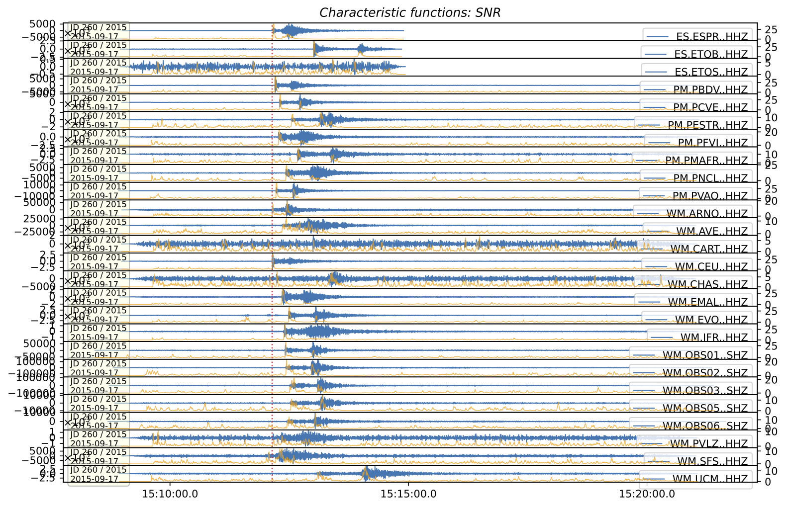
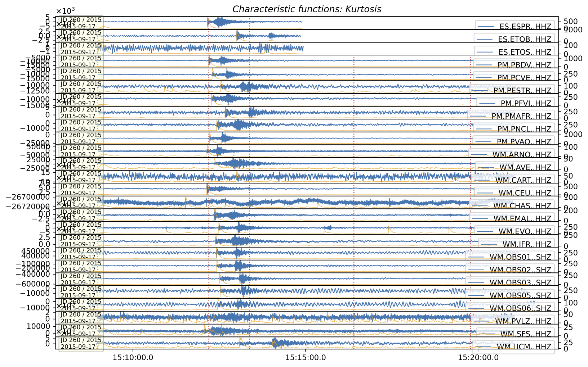

Overview
Coincidence Trigger proceess input wavefroms to surrogate it as Charachteristic Functions. Then, associate CFs threshold in time spans to events. It is very useful to roughtly detect event time and separate picks for those events. surfQuake offer a coincidence trigger tool that uses signal-to-noise ratio and kurtosis CFs. The core of the coincidence trigger can be also found here ObsPy
References:
Allen, R. (1982). Automatic phase pickers: Their present use and future prospects. Bulletin of the Seismological Society of America, 72(6B), S225-S242.
Poiata, N., C. Satriano, J.-P. Vilotte, P. Bernard, and K. Obara (2016). Multi-band array detection and
location of seismic sources recorded by dense seismic networks, Geophys. J. Int.,
205(3), 1548-1573, doi:10.1093/gji/ggw071.
Coincidence Trigger from CLI
The command trigg runs the coincidence trigger. It is important to set the config.ini file to determine the methodoly and the parametrization. Let's see it.
Config file
This config.ini is used for setting the coincidence trigger for a regional event scenario. Be in mind that is split in specific algorythms parametrization (SNR or Kurtosis), and the clustering, where user configurate the frquency bandwidth for processing waveforms and the association thresholds.
[Kurtosis]
CF_decay_win = 4.0
[STA_LTA]
method = classicstalta
sta_win = 1
lta_win = 40
[Cluster]
method_preferred = SNR # or Kurtosis
centroid_radio = 60 # seconds around the event declaration to separate picks
coincidence = 4 Threshold for coincidence triggs
threshold_off = 5 # detection off per station for kurtosis 5
threshold_on = 15 # detection on per station for kurtosis 20
fmin = 0.5
fmax = 8.0
Usage
surfquake trigg
Key Arguments:
-p, --project_file [REQUIRED] Path to a saved project files
-o, --output_folder [REQUIRED] Directory for processed output
-c, --config_file [REQUIRED] Processing configuration (YAML)
-n, --net [OPTIONAL] Network code filter
-s, --station [OPTIONAL] Station code filter
-ch, --channel [OPTIONAL] Channel filter
--min_date [OPTIONAL] Filter Start date (format: YYYY-MM-DD HH:MM:SS), DEFAULT min date of the project
--max_date [OPTIONAL] Filter End date (format: YYYY-MM-DD HH:MM:SS), DEFAULT max date of the project
--span_seconds [OPTIONAL] Select and merge files in sets of time spans, DEFAULT 86400
--plot [OPTIONAL] Plot events and Characteristic Functions
--picking_file [OPTIONAL] If set a picking file, this will be separated accoring to found events inside cluster
Usage Example:
> surfquake trigg -p ./project.pkl -c config.yaml -o ./output_folder -ch "HHZ" --min_date "2024-01-01 00:00:00"
--max_date "2024-01-04 00:00:00" --span_seconds 86400 --picking_file ./pick.txt --plot
> surfquake trigg -h # request help
If user set for example --picking_file ./pick_file.txt, the picking file will be separated according to cluster parametrization. Be in mind that might be you have pick all seismograms inside your project and generate the picking file, but before locate, you need to associate this picks to events. The output of the coincidence trigger is as follows coincidence_sum.txt
In the figure it is shown a very simple example of the plotting output from trigg tool. The plot shows a vertical red line with the event and the CFs in orange together with the raw seismograms.
-
SNR Coincidence Trigger 
-
Kurtosis Coincidence Trigger 
Classes & Methods
class CoincidenceTrigger:
def __init__(self, projects: list, coincidence_config: Union[str, CoincidenceConfig], picking_file=None,
output_folder=None, plot=None)
"""
Attributes:
- projects (list): a list of projects surfproject objects
- coincidence_config (str, CoincidenceConfig): path to config.ini or directly a Dataclass CoincidenceConfig
- picking_file (str): path to the picking file
- output_folder (str): path to the picking file
- plot (bool): if user desires to write the output plot
Methods:
- optimized_project_processing(self)
"""